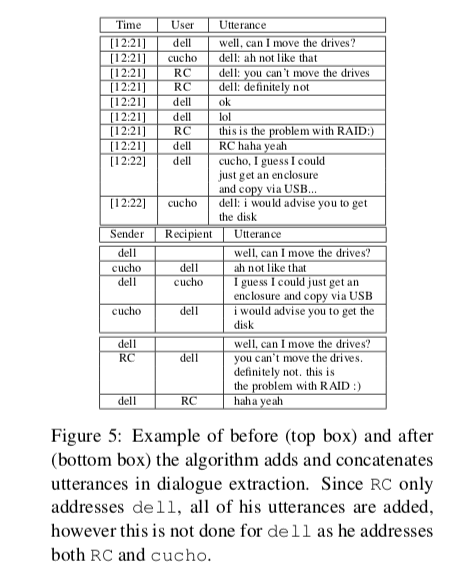
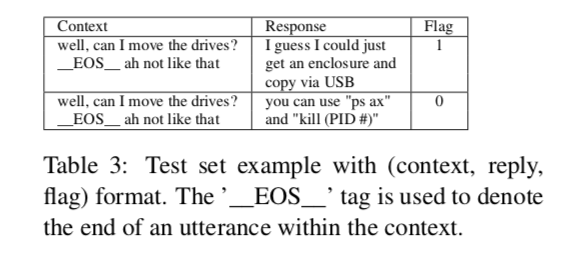
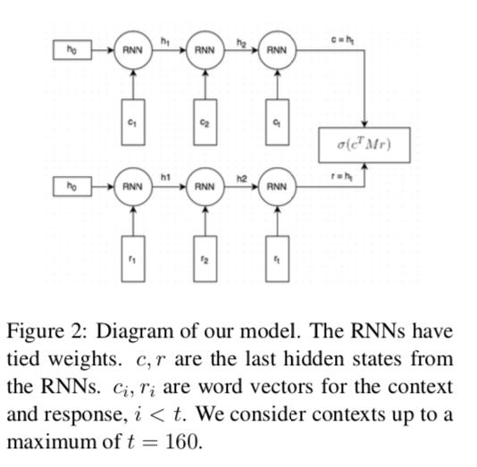
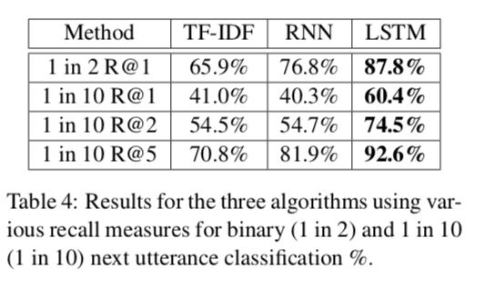
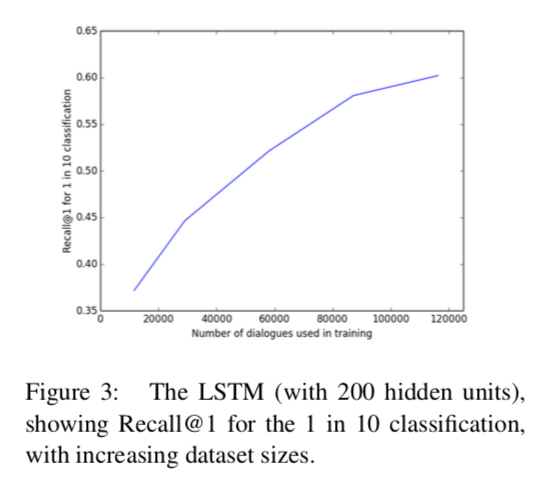
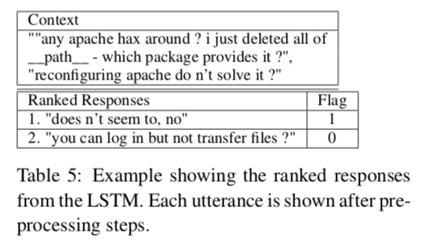

论文：The Ubuntu Dialogue Corpus: A Large Dataset for Research in Unstructured Multi-Turn Dialogue Systems
本论文基于ubuntu 对话语料库，该语料库包含大约100万条多轮对话。在该论文中，会构建一个对话代理，他能够完成在不同主题的进行一对一多轮对话。主要是针对非结构化对话，对话中交换的信息没有先验的逻辑表示。这与最近使用slot-filling 表示的结构化对话任务系统形成了对比。在近几年来，通过使用机器学习方法，尤其是神经网络，使得AI的其它几个领域都取得了根本性的突破，其中最主要的是卷积和循环神经网络。将这一进展归因于三个主要方面是合理的：1)有很多大型的数据集公开使用；2）能够更容易获得计算资源；3）神经网络的训练方法的发展，尤其是对未标注数据集的利用。但是，在对话系统领域并没有取得同样的进展。我们认为这是因为缺乏足够大的数据集，为了解决这个问题，我们提供一个新的大型的数据集用于研究多轮对话系统。
本论文中使用的数据集，包含了大约100万个双人对话信息，它是同ubuntu的chat logs中提取出来的，对话内容主要是ubuntu相关问题的技术支持。每个对话平均有8轮对话，最少包含3轮对话。这个数据集比结构化数据集(如the Dialogue State Tracking Challenge数据集)大好几个数量级。另外，本数据集是基于特定领域的，即技术支持领域，那么就可以基于该数据集构建一个特定领域的AI代理，用于特定的应用。区别于开放领域的聊天机器人。
在本论文中，提出了一个学习框架用于分析此数据集，从简单的TF-IDF到复杂的神经网络模型，如RNN,LSTM。我们提供一个benchmark。通过与其它数据集的对比，本数据集的优势在于数据量大，且更符合人与人之间的对话形式。
学习框架
以往的大多数对话研究都是基于结构化slot-filling任务。但，值得一提的一个神经网络框架为RNN+denoising autoencoder，基于DSTC 3数据集。对于非结构化对话的工作，基于twitter数据集提出了一个应答生成模型，灵感来自于统计机器翻译，这个模型的性能远远超过了先前的信息检索方式(比如，最近邻法)。
ubuntu对话数据集
dataset creation
把原始的ubuntu对话数据集中的每条message表示称四元组(time, sender,recipient,utterance)。
识别接收者
在很多的utterance中，接收者的名字通常出现在第一个单词中，有时也出现在最后，或者完全没有出现在utterance中，这种情况下，该utterance为原始的问题消息。此外，有些用户选择与普通英语单词相对应的名字，比如”the”或”stop”，这可能会导致许多误报。为了解决这个问题，我们构建前几天和最近几天的用户名字典，然后对utterance的第一个单词与用户名字典进行对比，如果与字典中的字典中的用户名匹配，同时该单词不是普通的英语单词，那么该单词就是该消息的目标接收者的名字。如果没有匹配，那么可以假设该消息是原始的问题消息，接收者设置为空。
Utterance Creation
对话提取算法可以从第一个响应消息回溯，找到原始的问题消息。第一个响应消息由接收者的名字来标识。原始的问题消息则由最近的由接收者名字表示utterance来标识。
所有不是第一响应消息或者原始的问题消息的utterance都会被丢弃。而对于那些没有任何响应消息与之对应的原始的问题消息也会被丢弃。另外，我们还会把包含超过5个utterences，单个用户的utterances信息占整个对话的80%的对话丢弃。
最终，我们只考虑至少包含3轮的对话，以帮助对长期依赖关系进行建模。

special cases and limitations
在很多情况下，一个用户提出问题，然后多人会响应这个问题，同时给出不同的答案。在这个数据集中，每一对话只发生在两个人之间的，第一个人是提出问题的人，第二个人是回答问题中的其中一个人，因此，如果存在多个人回答，那么就可以把这些回答进行拆分，得到多个对话。但是，这种处理方式，会产生一些副作用，它导致同一个问题出现多次的情况。然而，数据集规模比较大，因此此副作用可以忽略。
另一个问题是被划分为同一个对话中的utterances没有考虑到它们发布的时间。即使是两个用户间隔几个小时或几天时间的utterances也被放在同一个对话中。不过，这类情况也很少。我们在数据集中保留了utterance的发表时间，以便其它的研究者可以根据自身的需要来，对类对话按照发表时间进行处理。
测试集
从数据集中随机抽取2%的数据作为测试集，但是这部分测试集需要进一步的处理，从每一个对话中提取出三元组信息(context, response, flag)。flag为布尔型表示response是否是给定context的下一个utterance。response为target(output) utterance。context由出现在对话中出现在response之前的一系列的utterances组成。
我们创建一对三元组，一个三元组包含正确的response，即flag为True；另一个三元组包含错误的response，即flag为False，该response是随机从测试集中的其它对话中随机抽取的。成对三元组如下图所示：

因为我们想要学习预测对话中的每一个utterance，而不是只预测结束语，我们考虑测试集中对话的不同上下文部分。上下文大小由一个简单的公式随机确定：
其中，C表示最大的上下文大小，在这里我们设置C=20，常数2表示上下文的最小大小。t表示对话的长度，使得。n是一个随机数字，与C成反比。
评估方法
这是一个分类任务，使用recall和precision评估方法。在语言任务中，一族常用的评估方法叫做Recall@k(简写为)，即让AI代理选择k个最有可能的候选response，如果正确的response出现在这k个候选response中，那么该AI代理做出正确的判断。这里只有R@1与本任务的二分类相关(table 3)。
尽管在response分类上语言模型的性能良好，但是并不能很好的衡量下一个生成的utterance的好坏。我们假设对分类任务的改进最终也会使得生成任务的改进。
非结构化对话的学习框架
为了提供更多的证据证明本数据集对于使用神经网络来构建对话管理系统的研究价值，我们提供了两个神经网络模型作为benchmark，同时还提供了一个naive baseline。这些方法分别为：TF-IDF,RNN,LSTM。在这里，我们使用nltk和Twitter tokenizer对数据集中的每一个utterance进行分析。使用一个通用的tags来表示各种单词类别，比如名字，地理位置，组织，URLs以及系统路径等。
为了训练RNN和LSTM模型，我们把所有的数据集处理成测试集的三元组格式。对于训练集，我们不需要随机采样上下文的长度，而是考虑每一个utterance(response 从对话的第三个utterance开始)作为潜在的response，把前一个utterance作为context(注意：在每个对话中，第一个utterance是原始的问题消息)。因此，对于长度为10的对话，可以得到8个三元组训练样本。由于这些样本之间存在重叠，因此它们之间存在相关性，但是通过对训练数据集进行shuffle来缓解这个问题。负的response则随机从其它的训练数据中采样。
TF-IDF
词频-逆文档频率是一种统计方法，用于捕获一个单词在文档中的重要性，在我们的任务中则捕获一个单词在一个context的重要性。公式为:
在这里表示单词w出现在context d中的频率，N表示所有的对话数。分母表示包含单词w的对话的数量。
对于分类任务， 要分别计算context的tf-idf向量表示，以及每个candidate response的tf-idf向量表示。计算每个condidate response的tf-idf向量与context的tf-idf向量的余弦相似度，把相似度最高的candidate response作为输出(Recall@1)。对于Recall@k，则返回top k responses。
RNN
下图显示两个RNN模型，上面的RNN模型用于对于context进行编码；下面的RNN模型+beam-search用于生成candidate response的对应向量，它的初始隐藏状态则使用上面的RNN的最后的隐状态。

在这里使用glove embedding，同时在训练的过程中进行fine-tuned。使用两个RNN的最后一个hidden state来分别表示context和response，通过以下的公式来计算在给定context的情况下，response出现的概率为:
其中，偏置b和矩阵M都是需要学习的模型参数。以上式子可以解释为，给定一个response，根据它对应的hidden state生成一个对应的context，然后，计算该context向量与原context向量c之间的dot product。最后，通过sigmoid激活函数，得到一个概率值。目标函数为：
其中，是模型参数的模型参数。为了计算方便，令。
问题：这里的损失函数为什么这么设计？？？
训练集中，正样本和负样本的比例为1:1。
设是一个mxn矩阵，称是这个矩阵的Frobenius范数。
RNN的hidden state size为50，使用orthogonal进行初始化，则使用取值范围在-0.01到0.01之间的均匀分布进行初始化处理。使用Adam优化器，gradients clipped 设置为10。
LSTM
使用hidden state units size 为200。
实验结果
如下图所示：

此处的1in2 表示正样本与负样本的比例为1:1，1in10表示正样本与负样本的比例为1:9。以上的实验结果表明LSTM在所有的评估标准中都是最好的，有一点值得注意，那就是在1in10R@1的任务中，TF-IDF的结果优于RNN，很大可能是因为RNN在捕获长序列的能力比较差的原因。


State Tracking and Utterance Generation
response selection任务可以视为介于slot filling和utterance 生成之间的任务。在slot filling中，candidate response(states)通过知识工程，先验的确定，且通常这个它们的数量小于本论文需要考虑的数量。
参考资料
- 代码
- 数据集
- paperweekly-知乎
- Twitter tokenizer
- 为什么 LSTM 在参数初始化时要使用 SVD 方法使参数正交？
- ACL2019参会分享（一）Dialogue篇
- 矩阵的 Frobenius 范数及其求偏导法则
- 对话系统(Chatbot)论文串烧
- 小哥哥，检索式chatbot了解一下？
- EMNLP2018 - 语言理解+对话系统的最新进展
- A Survey of Available Corpora for Building Data-Driven Dialogue Systems
- Deep Reinforcement Learning for Dialogue Generation
- Knowledge-based end-to-end memory networks
- A Bi-Encoder LSTM Model for Learning Unstructured Dialogs